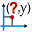

In order to measure abscissa of a point relative to a frame, click on the  icon.
Simply click on the point the abscissa of which has to be measured.
If more than one frame exists, a dialog box will popup to choose the frame.
The point clicked must be named.
If it isn't it will be named by the tool.
In the future calculus, this abscissa will be represented by xCoord(M,O,I,J) (assuming the frame is (O,I,J)).
Created with the Personal Edition of HelpNDoc: Easy EPub and documentation editor